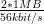

2 Requirements
2.1 Scope
This work defines a protocol to share
2.2 General Requirements
- Lesen/Schreiben der verwalteten Resourcen: Kontakte, Kalender-Events, Todos,
Journal-Einträge, Free-Busy, …
- Synchronisation von Collections für Offline-Nutzung
- einfach zu implementieren (vgl. CalDAV, CardDAV, IMAP) → ReST
- Standardkonform → xCard, xCal, ATOM
- nutzbar durch JavaScript: JSON basierte Medientypen
- Groupware Elemente: Kontakte, Kalender-Events, Todos, Journal-Einträge, Free-Busy
2.2.0.1 Replacement for CardDAV The web application should provide at least the same
features as the CardDAV protocol. It should be demonstrated that a restful application can serve
for the same purpose and thus that the additional complexity of WebDAV and CardDAV is not
necessary.
The standard lists the supposed main features of CardDAV[Dab11, sec. 1]:
- Ability to use multiple address books with hierarchical layout.
- Ability to control access to individual address books and address entries as per
WebDAV Access Control List (ACL) [RFC3744].
- Principal collections can be used to enumerate and query other users on the system as
per WebDAV ACL [RFC3744].
- Server-side searching of address data, avoiding the need for clients to download an
entire address book in order to do a quick address ’expansion’ operation.
- Well-defined internationalization support through WebDAV’s use of XML.
- Use of vCards [RFC2426] for well-defined address schema to enhance client
interoperability.
- Many limited clients (e.g., mobile devices) contain an HTTP stack that makes
implementing WebDAV much easier than other protocols.
There are some minor features of CardDAV, that are mainly inherited from WebDAV and whose
general usefulness outside of the scope of a content management system could be argued. See
subsection 2.8 for a discussion of those.
2.2.0.2 Restful The application should obey the constraints of a rest application as specified in
[Fie00].
TODO: 4 Grundconstraints von REST auflisten.
The above constraints are not an end in itself but lead to the following required or desirable
properties:
- Cacheability (5.1.4) can keep the data available also in offline mode, improves
performance and scalability.
- Simplicity helps to develop glue code to connect the application to other systems or to
extend it.
- Modifiability allows to adapt the Groupware to changes in the organization.
- Reliability should not need additional justification.
- Administrative scalability means that intermediary components can be deployed
independent of the administrator of the main application.
Other outcomes described by Fielding that may not be of importance for the present work are:
scalability in terms of users, network performance and efficiency.
2.3 User Classes and Characteristics
Different kinds of clients should be able to use the API. Table 3 lists clients whose
constraints and characteristics must be respected in the design. The choice of clients and
their characteristics is intentionally conservative to cover a wide range of real world use
cases.
| | Memory | Bandwidth | preferred format | comment |
|
|
|
|
|
| Web Browser (HTML5) | 5 MB | 56 kbit/s | JSON | workplace, internet cafe |
| Mobile Device | 512 MB | 384 kbit/s | any/XML | Smart Phone, Tabled |
| Desktop application | 1 GB | 10 Mbit/s | any/XML | PIM suite |
| Server application | 4 GB | 100 Mbit/s | any/XML/HTML | intranet application |
| |
Table 3: Constraints of different API clients
The most problematic client in the list is the web browser with only 5MB of storage capacity (via
WebStorage )
a potentially very bad internet connection, the inability to leave data for later sessions (internet
cafe) and the restriction to one particular format (JSON). However this use case is of importance
as the OpenSocial ( 1.2.3) case shows. It is also the primary use case to justify an API that
provides multiple Media Types since it mandates JSON while the canonical Media Types (xCard,
xCal) support XML.
2.4 Data Characteristics
Lacking sources for more accurate numbers, a couple of conservative estimates are made for the
size and number of resources in the scope of this work. This guesswork is not perfect. But it
provides a rationale behind later design decisions (Listing 4.3) and outlines their applicability for a
concrete use case.
Contacts It is believed that humans have regular social contacts to around 150
people .
So the number of contacts in a users address book collection should at least handle 1500
contacts.
The average textual data size associated to a contact is expected to be around 840
bytes .
100 kb are enough for an image file to identify a face.
So a collection with a data size of 1500contacts* 840 ≈ 1MB should be a usable address
book without profile pictures for many users.
Events A very busy person may have 10 events per day. A two years calendar thus
contains 2 * 365 * 10 = 730 events. The core data of an event is estimated to comprise 356
bytes . So
a useful calendar collection has a data size of 730events * 356 ≈ 0.25MB
Conclusions The size of full, useful collections of personal information items has the same order
of magnitude then the size of a digital image taken with today’s smart phones. With the worst case
bandwidth from Table 3 the download of a full uncompressed collection lasts around
 ≈ 5min .
Even with a drastic data compression of 90% the transfer would still last over 30 seconds. With the
next better bandwidth of the mobile device however the transfer duration for the uncompressed
case is already under one minute (≈ 42sec).
For all described clients the client’s storage is large enough to contain at least a few
collections.
2.5 Operation Environment
The application is expected to be installed in a Java servlet container like Tomcat or Jetty and to
contact a separate storage component. The primarily targeted storage component is an IMAP
server with a Kolab conform set of groupware folders. However the design should not restrict
the extension to a document database like CouchDB, plain files, relational or XML
databases.
2.6 Design and Implementation Constraints
2.7 Specific Requirements
2.7.0.3 Nested and mixed collections The design should not unnecessarily hinder that
collections could be nested or contain different kinds of media types, e.g. calendar items and
contacts.
[Dab11, sec. 5.2] forbids nested and mixed collections to ease the implementation of clients.
However both may make sense in certain scenarios and the protocol should not exclude such
scenarios. A collection could for example represent all items related to a project, which include
contacts, events, todos and notes.
2.8 Excluded requirements
2.8.0.4 Search It is not required that the server implements any means to search its data. It is
not excluded that such a facility could be added later. It is however expected that searching could
be implemented separately. This could be done either on a synchronizing client or as a separate
system in the same administrative domain as the server.
2.8.0.5 Performance optimization The system is meant to inherit the benefits of a restful
architecture. It should therefor be possible to attach separate caching intermediaries for read
requests. Rather then concentrating on the performance of the implementation of read requests it
should be taken care that the architecture supports external caching and thus avoids to serve the
same read request multiple times.
2.8.0.6 Access Control The aspect of access control would broaden the scope of this work to
wide. However it could be kept in mind, whether the proposed design could be enhanced by a
separate access control design as proposed in [GZLW11].
2.8.0.7 Copying and Moving WebDAV introduces the HTTP verbs to COPY and MOVE. The
usefulness of such functionality must of course be compared to the complexity of the
implementation and the drawback of incompatibility to plain HTTP.
It is possible to enhance a restful API with copy and move functionality without extending
HTTP. The only requirement is that additional hyperlinks can be attached to the resources of the
API. Allamaraju [All10, Ch. 11] proposes “controller resources” that act on POST requests and
are linked from the resources they act on. Custom link relations are used to indicate the semantic
of the controller resource.
This work does not include initial support for copy or move.
2.8.0.8 Versioning WebDAV and therefor CalDAV and CardDAV support the versioning of
resources as an extension to the HTTP protocol. Versioning is an important feature for a text
authoring system that may have been the main target for the WebDAV protocol. It does however
seem to be of little use for the resources considered here. The resources are mostly created in one
session by one user and seldom modified.
2.8.0.9 Make Collections WebDAV introduces the MKCOL HTTP verb to create collections.
CardDAV recommends that implementations support this to allow users to “organize their data
better”. An alternative would be to make use of ATOM categories for grouping. Instead of creating
a new (empty) collection the user would thus create a contact resource with a new category. An
ATOM service document could then link to a new (virtual) collection that only contains and
accepts resources of this category.
TODO: What are the proposed ways to create collections? Post a feed to the service
document? Put a new service document? Put a feed document to the desired location?
2.8.0.10 Locking As with Versioning, this is feature of WebDAV is not considered. Instead of
locking a resource HTTP supports conditional updates and leaves conflict resolution to the
client.
[NL99, sec. 1] provides three questions to help deciding whether a protocol should support
locking and which in the present case advise against locking: The content is mergeable in contrast
to binary data like images. The editing is expected to be localized to isolated points in the document,
e.g. changing just one field in a content or event. And the content can be edited while the user is
offline.
2.8.0.11 Push notifications This work does not include any means to actively
notify (push) a client about changes happening on the server. The client needs to
initiate a request (pull) to the server to look for changes. However separate solutions
exist
to enable a push workflow on top of a feed based application.[WM09] It
may therefor not be seen as a disadvantage to omit push notifications as a
requirement.